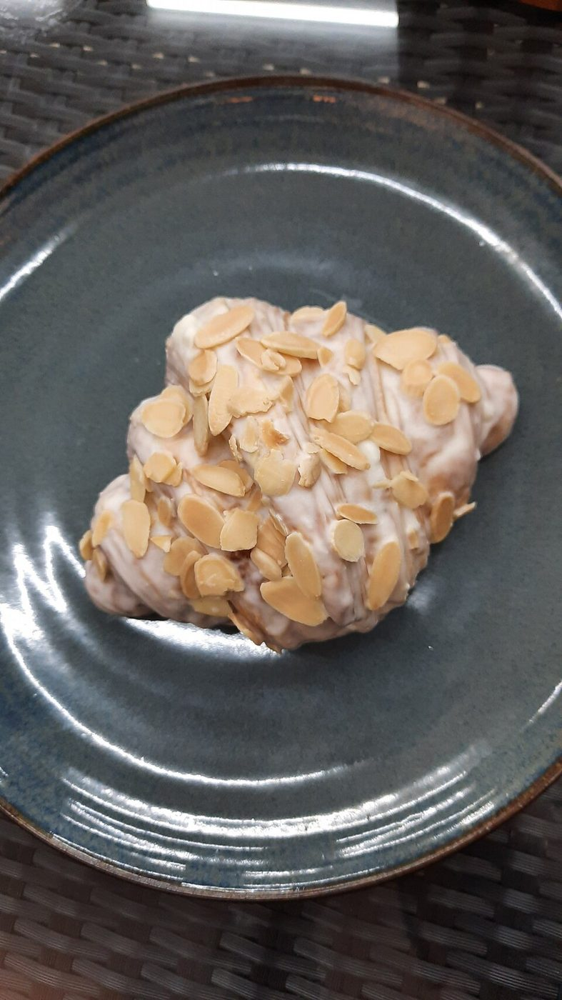

口コミ
想像した声(イメージ例)


イメージ例
こんな声があったら
イメージ例Instagramをのぞいてみたいです。
イメージ例写真のページを開いて、営業日を確かめてみたいです。
イメージ例場所のページで、行き方を確かめてみたいです。
上の3件は制作側の創作で、実在のお客様の投稿ではありません。




口コミ
イメージ例
イメージ例Instagramをのぞいてみたいです。
イメージ例写真のページを開いて、営業日を確かめてみたいです。
イメージ例場所のページで、行き方を確かめてみたいです。
上の3件は制作側の創作で、実在のお客様の投稿ではありません。
